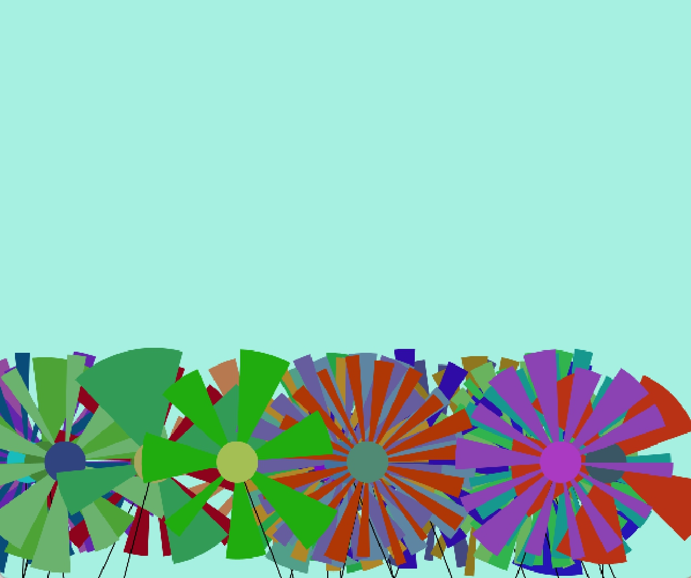
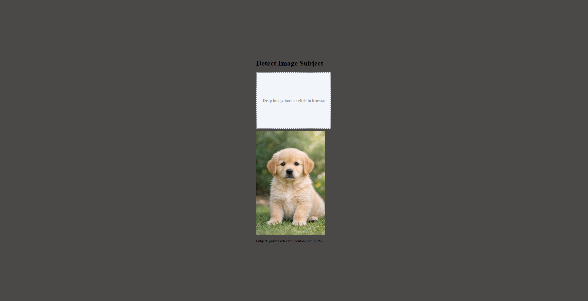
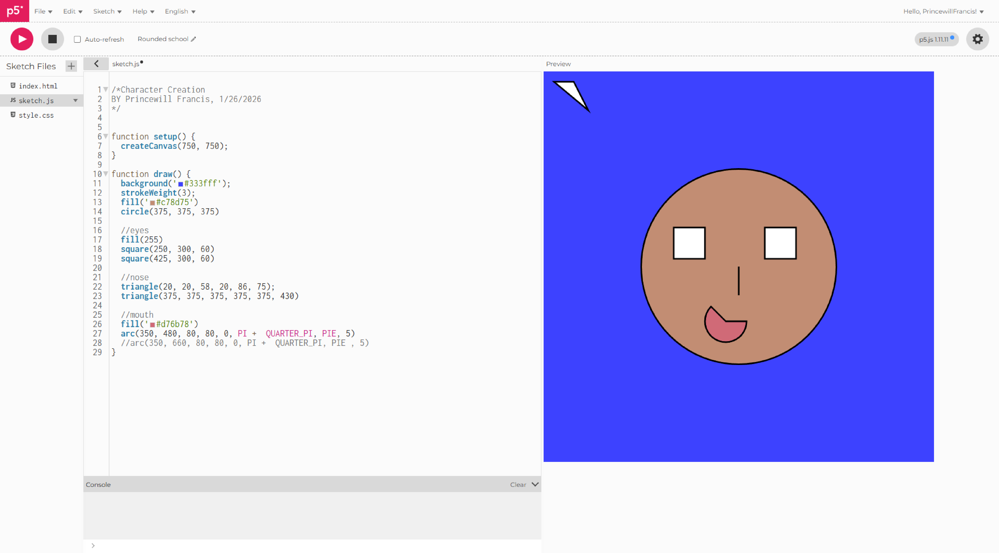

# Code portfoilio
by Princewill Francis
2026
Processing work
Code Portfolio Work

Project: Flower project
The objective of this assignment was to style a flower image in Processing. I solved the challenge by lowering the flowers and changing their size and color.

Project: Detect Image Subject
The objective of this assignment was to style the base detect image subject site into our own. I solved the challenge by making it my own, doing this by changing the background color and centering the UI.

Project:Character Creation
The objective of this assignment was to practice our skills at html to create a face using code. I solved this challenge using the code on the left to make a simple smiling face.